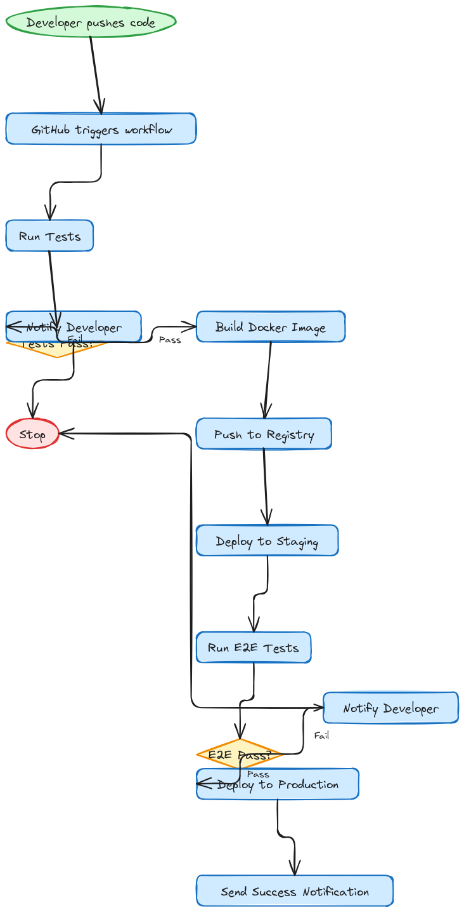
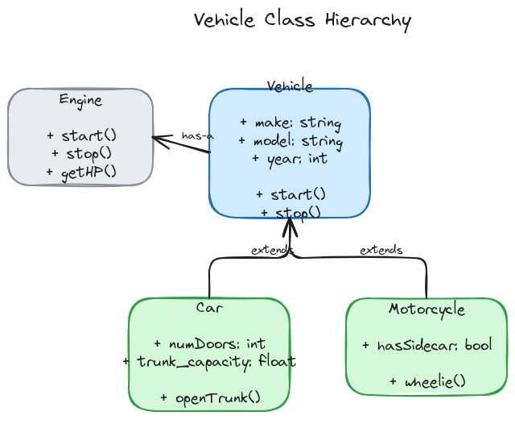
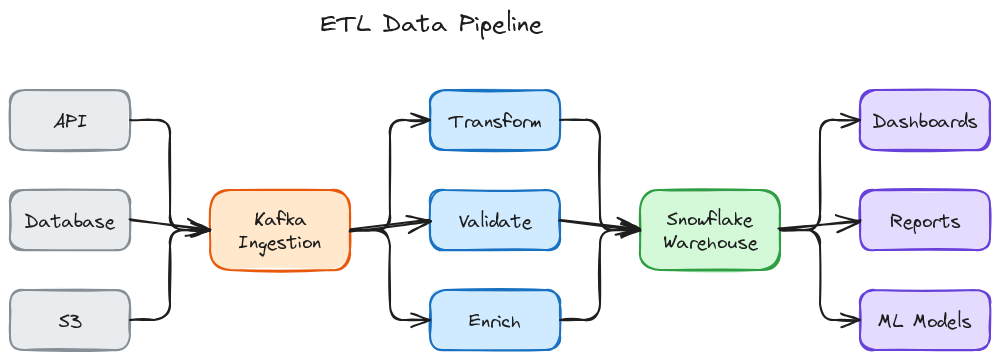
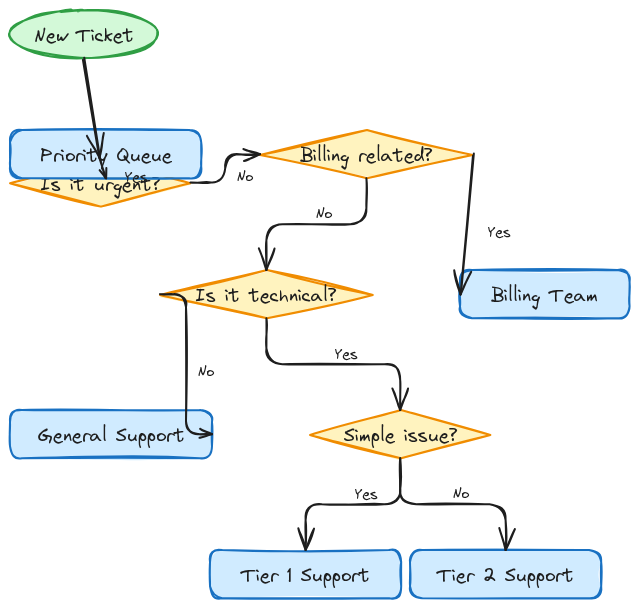
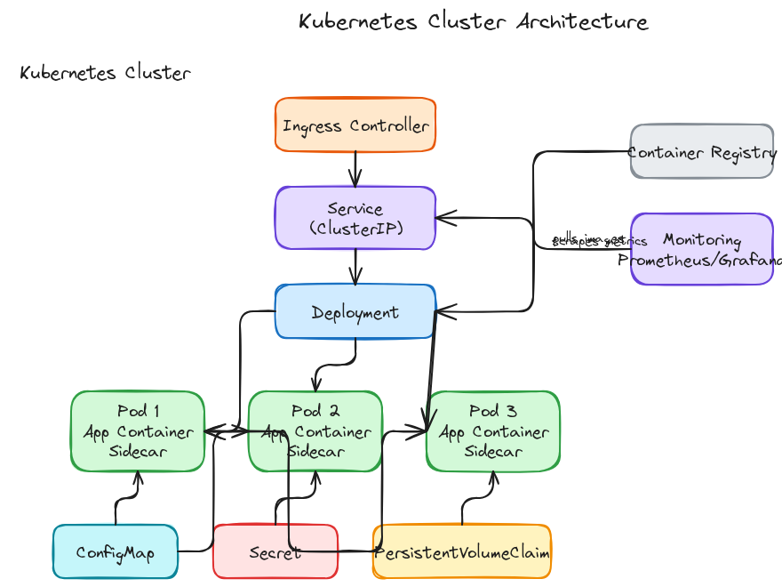
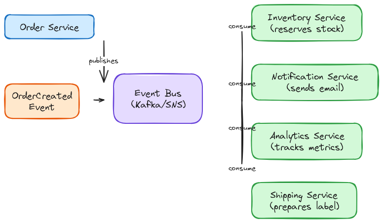
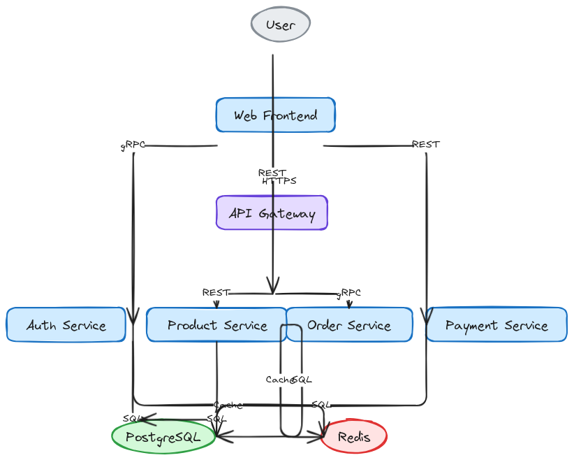
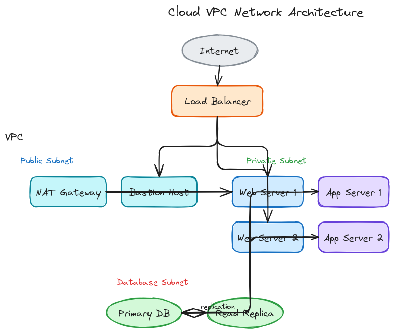
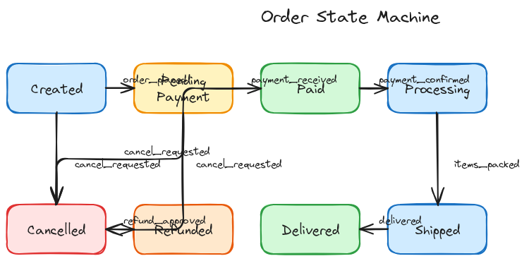
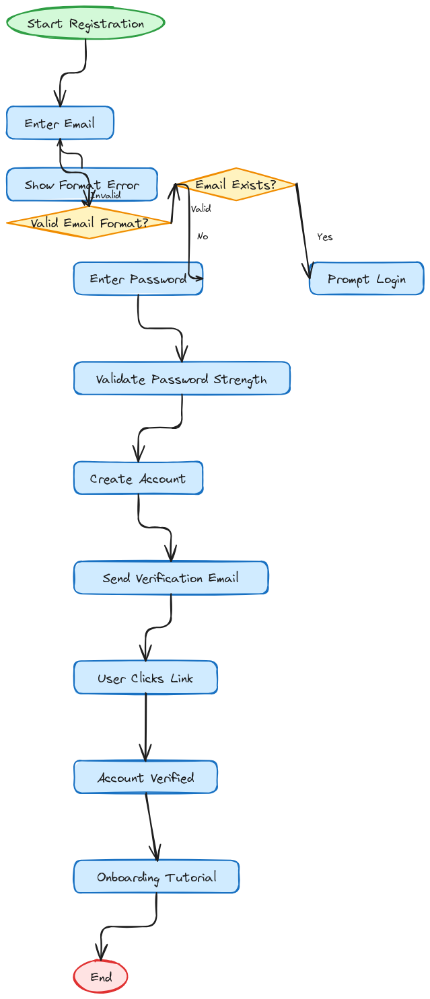

AI-generated diagrams using Claude Code with the excalidraw-diagrams skill

GitHub Actions deployment workflow
Create a flowchart showing a CI/CD pipeline: Developer pushes code -> GitHub triggers workflow -> Run Tests (decision: pass/fail) -> if fail, notify developer and stop -> if pass, Build Docker Image -> Push to Registry -> Deploy to Staging -> Run E2E Tests (decision) -> if pass, Deploy to Production -> Send success notification. Save as 'cicd_pipeline.excalidraw'.

Vehicle class inheritance
Create a UML class diagram showing: Vehicle (base class with properties: make, model, year and methods: start(), stop()) -> Car (extends Vehicle, adds: numDoors, trunk_capacity) and Motorcycle (extends Vehicle, adds: hasSidecar). Also show an Engine class that Vehicle has-a relationship with. Save as 'class_diagram.excalidraw'.

ETL data processing flow
Create a data flow diagram showing an ETL pipeline: Data Sources (API, Database, S3) -> Ingestion Layer (Kafka) -> Processing (Spark jobs for Transform, Validate, Enrich) -> Data Warehouse (Snowflake) -> Analytics (Dashboards, Reports, ML Models). Use different colors for each stage. Save as 'data_flow.excalidraw'.

Customer support triage logic
Create a decision tree flowchart for support ticket routing: New Ticket -> Is it urgent? (Yes: Priority Queue) -> Is it billing related? (Yes: Billing Team, No: next check) -> Is it technical? (Yes: check complexity) -> Simple issue? (Yes: Tier 1 Support, No: Tier 2 Support) -> Default: General Support. Use diamond shapes for decisions. Save as 'decision_tree.excalidraw'.

K8s cluster architecture
Create a deployment architecture diagram: Kubernetes Cluster containing: Ingress Controller -> Service (ClusterIP) -> Deployment with 3 Pod replicas -> each Pod has App Container and Sidecar. Show ConfigMap and Secret connecting to Pods. Show PersistentVolumeClaim connecting to Pods. External: Container Registry and Monitoring (Prometheus/Grafana). Save as 'deployment.excalidraw'.

Async messaging with events
Create an architecture diagram for event-driven system: Order Service publishes OrderCreated event -> Event Bus (Kafka/SNS) -> multiple consumers: Inventory Service (reserves stock), Notification Service (sends email), Analytics Service (tracks metrics), Shipping Service (prepares label). Show the event flow with arrows. Save as 'event_driven.excalidraw'.

E-commerce platform with multiple services
Create an architecture diagram for an e-commerce platform showing: User, Web Frontend, API Gateway, Auth Service, Product Service, Order Service, Payment Service, and PostgreSQL and Redis databases. Show the connections between services with labels for the protocols (REST, gRPC). Save as 'microservices.excalidraw'.

Cloud VPC network layout
Create a network architecture diagram showing: Internet -> Load Balancer -> Public Subnet (with NAT Gateway and Bastion Host) -> Private Subnet (with Web Servers and App Servers) -> Database Subnet (with Primary DB and Read Replica). Show the VPC boundary and subnet boundaries. Save as 'network_topology.excalidraw'.

E-commerce order lifecycle states
Create a state machine diagram for an e-commerce order: states are Created, Pending Payment, Paid, Processing, Shipped, Delivered, Cancelled, Refunded. Show transitions with event labels like 'payment_received', 'items_packed', 'delivered', 'cancel_requested', 'refund_approved'. Use a horizontal layout. Save as 'state_machine.excalidraw'.

User signup and onboarding
Create a flowchart for user registration: Start -> Enter Email -> Validate Email Format (decision) -> if invalid, show error and loop back -> Check if Email Exists (decision) -> if exists, prompt login -> Enter Password -> Validate Password Strength -> Create Account -> Send Verification Email -> User Clicks Link -> Account Verified -> Onboarding Tutorial -> End. Save as 'user_journey.excalidraw'.